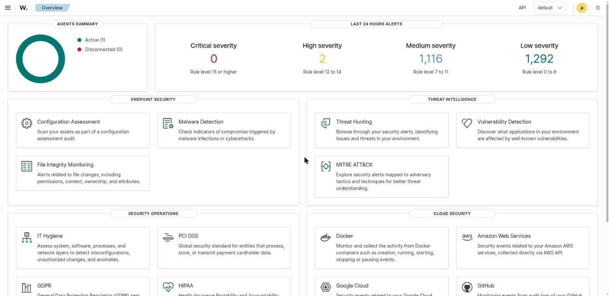
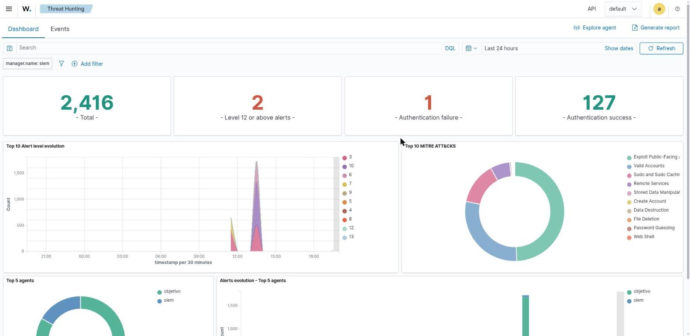
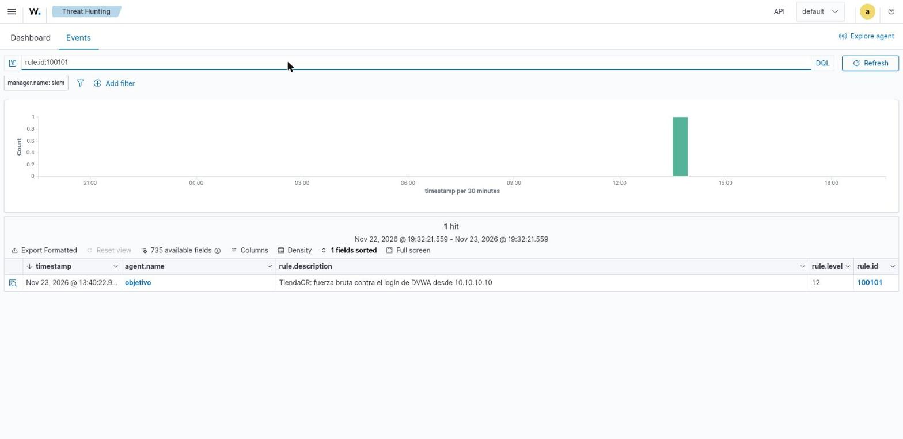
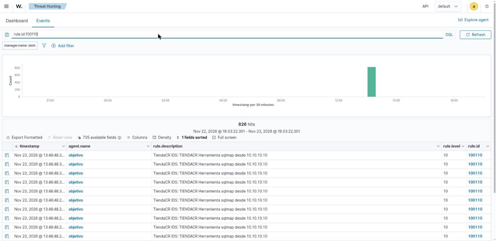
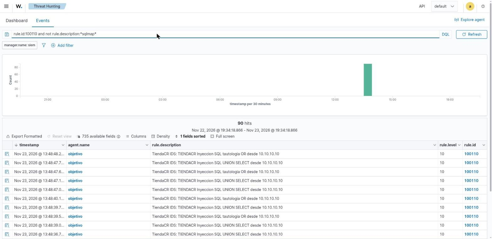
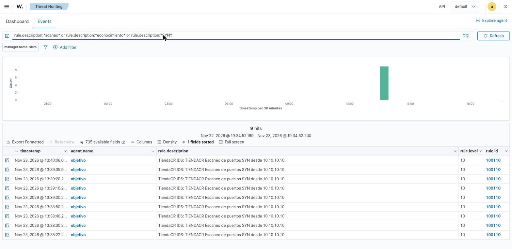
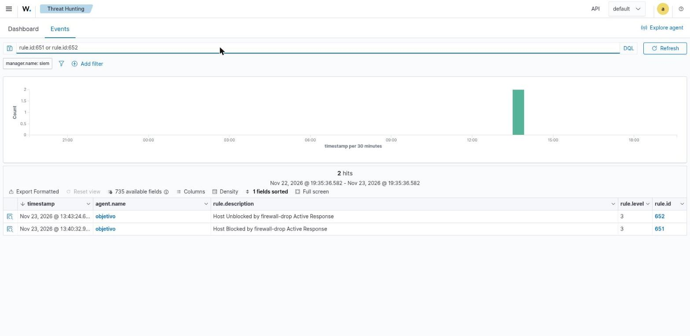

Curso: ITI-922 Seguridad de TI II · Proyecto 2 (15 %) · Prof. Marcos C. Integrantes: Rodríguez González, Justin · Rojas Morales, Cristian Fecha: 25 de noviembre de 2026 Repositorio: https://github.com/JustinRodGon/mini-soc-tiendacr
Declaración de uso de IA. Se utilizó un asistente de IA (Claude) para apoyar la redacción del informe, la generación de los scripts de despliegue y de ataque, y la depuración de las reglas de detección. Todo el contenido fue revisado y comprendido por el equipo; la configuración se ejecutó y verificó en el laboratorio propio. El uso de IA no sustituye la comprensión que se evalúa en la defensa oral.
Se diseñó y operó un centro de operaciones de seguridad (SOC) mínimo para la tienda en línea ficticia TiendaCR. El SOC protege un servidor web vulnerable (DVWA sobre contenedor) con controles de acceso de denegación por defecto, lo monitorea con un IDS de red (Suricata) y un HIDS/SIEM (Wazuh), y responde de forma automática a los ataques. Sobre esta plataforma se ejecutaron cuatro ataques controlados —reconocimiento, fuerza bruta, inyección SQL y subida de webshell— todos detectados por reglas propias, con su evidencia, tiempo de alerta y técnica MITRE ATT&CK. La respuesta automática bloqueó en el firewall la IP atacante tras superar el umbral de fallos de autenticación, y el bloqueo se verificó y se liberó solo. Finalmente se remedió la aplicación y se repitieron los ataques: la inyección SQL pasó de volcar la tabla de usuarios completa a no ser explotable, reduciendo el riesgo residual de Alto a Bajo.
El laboratorio se construyó en local sobre KVM/libvirt (equivalente a VirtualBox, justificado en §4.1), con una red interna aislada 10.10.10.0/24 y el cortafuegos UFW en lugar de un grupo de seguridad de nube. El proyecto demuestra, de forma medible y reproducible, el ciclo completo de un SOC: prevenir (controles de acceso), detectar (IDS + SIEM con reglas propias), responder (bloqueo automático) y recuperar (remediación y reevaluación del riesgo).
Principales resultados. (1) Cuatro ataques detectados con un tiempo de alerta de segundos. (2) Diez reglas de detección propias (siete de Suricata y tres de Wazuh), por encima de las tres exigidas. (3) Una respuesta automática verificada que aísla al atacante sin cortar el tráfico legítimo del equipo. (4) Una remediación que reduce el riesgo de la inyección SQL de nivel Alto (9) a Bajo (2) y se comprueba con la misma herramienta de ataque.
La migración de servicios a la nube traslada parte de la seguridad al proveedor, pero deja en manos del cliente la protección del sistema operativo, la aplicación, los datos y el acceso. Muchas organizaciones pequeñas, como la ficticia TiendaCR, despliegan un servidor web sin un plan de monitoreo ni de respuesta: si son atacadas, no se enteran. Este proyecto construye, para esa empresa, el centro de operaciones de seguridad (SOC) que no tiene, y lo pone a prueba con ataques reales en un entorno controlado.
El trabajo persigue cinco objetivos, alineados con los resultados de aprendizaje de la unidad IV:
El alcance se limita, por las reglas de ética del curso, a máquinas creadas y controladas por el equipo: tres VM en una red interna aislada, sin exposición a Internet y sin pruebas de denegación de servicio. El informe sigue el ciclo de un SOC —prevenir, detectar, responder y recuperar— y cada sección se conecta con la evidencia recogida en el laboratorio.
La defensa de un servidor en la nube combina, al menos, tres planos: la red (quién habla con quién), el host (qué ocurre dentro de la máquina) y la configuración/identidad (cómo está expuesto el servicio). Ninguna herramienta cubre los tres planos por igual, de modo que la comparativa busca entender qué plano cubre cada una y cómo se combinan. Se analizan cinco herramientas: un servicio gestionado de un proveedor cloud (AWS GuardDuty) y cuatro de código abierto (Wazuh, Suricata, Falco y CrowdSec).
| Criterio | AWS GuardDuty | Wazuh 4.14 | Suricata 7 | Falco | CrowdSec |
|---|---|---|---|---|---|
| Qué detecta / protege | Cuenta e identidades, red y cargas de trabajo en AWS (CloudTrail, VPC Flow Logs, DNS, EKS) | Host: registros, integridad de archivos (FIM), detección de vulnerabilidades, SCA; es SIEM + HIDS | Red (NIDS/IPS): tráfico y capa de aplicación | Host/contenedor/Kubernetes en tiempo de ejecución (syscalls) | Red y aplicación; IPS colaborativo basado en comportamiento |
| Cómo | Anomalías + inteligencia de amenazas + ML, sin firmas que mantener | Reglas y decodificadores propios; correlación por frecuencia | Firmas (reglas ET/propias) + anomalías de protocolo | Reglas sobre llamadas al sistema | Escenarios de comportamiento + listas de reputación compartidas |
| Despliegue / recursos | SaaS, sin agentes ni infraestructura; se activa por consola | Manager + indexer + dashboard (≥ 4 GB RAM) y agente ligero | Un binario en el host/sensor; liviano | DaemonSet / servicio en el host; liviano | Agente + "bouncer"; muy liviano |
| Costo / licencia | De pago, por volumen analizado (p. ej. VPC Flow Logs ~US$1.00/GB el primer tramo, con descuentos por volumen); sin costo fijo | Gratis, GPLv2 | Gratis, GPL-2.0 | Gratis, Apache-2.0 (CNCF) | Gratis, motor MIT; listas premium opcionales |
| Respuesta automática | Sí, vía EventBridge → Lambda/Security Hub | Sí, active response (p. ej. firewall-drop) |
Como IPS en línea (modo inline) | Alertas; respuesta vía herramientas externas | Sí, el bouncer bloquea en firewall/proxy |
| Integración | Nativa con todo AWS (Security Hub, Detective) | Suricata, OpenSearch, MITRE, VirusTotal, Slack | Wazuh, ELK, Zeek, SIEM vía EVE JSON | Falcosidekick, Prometheus, SIEM | Firewall, Nginx, Cloudflare, listas comunitarias |
| Limitaciones | Solo AWS; costo crece con el tráfico; caja negra | Consume RAM; ruido si no se afinan reglas | No ve dentro de TLS sin descifrado; solo red | Solo host/contenedor, no ve la red | Enfocado en reputación; menos FIM/compliance |
AWS GuardDuty. Es el modelo gestionado: el proveedor analiza de forma continua los registros que ya genera la cuenta (CloudTrail, VPC Flow Logs, DNS de Route 53) y aplica aprendizaje automático e inteligencia de amenazas sin que el equipo mantenga firmas ni infraestructura. Su fortaleza es la cobertura de identidad y configuración —detecta llamadas de API sospechosas, llaves filtradas o instancias comunicándose con dominios maliciosos— que las herramientas de host y red no ven. Su debilidad para este proyecto es que solo funciona dentro de AWS y cobra por volumen analizado, lo que lo descarta para un laboratorio local sin costo.
Wazuh. Es una plataforma SIEM + HIDS de código abierto. El manager recibe los eventos de agentes ligeros instalados en cada servidor y les aplica reglas y decodificadores; el indexer (basado en OpenSearch) almacena y busca, y el dashboard visualiza. Para TiendaCR aporta tres capacidades decisivas: la lectura de los registros de autenticación y web (fuerza bruta), la integridad de archivos en tiempo real (detección del webshell) y la respuesta automática. Su costo es nulo, pero consume memoria (de ahí el dimensionamiento del SIEM a 5 GB).
Suricata. Es un IDS/IPS de red que inspecciona el tráfico y reconstruye la capa de aplicación (HTTP, TLS, DNS…). Funciona con firmas —el conjunto Emerging Threats Open trae ~53 500— y permite escribir reglas propias sencillas. Es el ojo de red del SOC: ve el escaneo de puertos y las cadenas de inyección en las URL. Su límite es que no ve dentro del tráfico cifrado sin descifrarlo y que solo observa la red, no lo que ocurre dentro del host.
Falco y CrowdSec se evaluaron pero no se usaron. Falco observa las llamadas al sistema del host y los contenedores (excelente para detectar que un proceso web lanza una shell), pero no ve la red, que es central en este escenario. CrowdSec es un IPS colaborativo orientado a reputación de IP y bloqueo; es muy liviano, pero aporta menos en integridad de archivos y cumplimiento, que el proyecto sí exige.
Para TiendaCR se eligieron Wazuh como SIEM/HIDS central y Suricata como IDS de red. Tres
razones: (1) cobertura complementaria —Suricata ve la red (ataques 1 y 3) y Wazuh ve el host
(ataques 2 y 4), de modo que juntos cubren los cuatro ataques del escenario—; (2) costo y
reproducibilidad —ambos son libres, sin costo y se despliegan en un laboratorio local, lo que
cumple el requisito de que el repositorio permita reproducir el entorno—; y (3) reglas propias y
respuesta automática —los dos permiten reglas personalizadas sencillas y Wazuh integra la
respuesta firewall-drop exigida en 2.6. GuardDuty se incluye como referencia del modelo
gestionado, útil para discutir el reparto de responsabilidad, pero su dependencia de AWS y su costo
por volumen lo hacen inviable aquí.
El modelo de responsabilidad compartida define qué asegura el proveedor de nube y qué asegura el cliente, y varía según el tipo de servicio (IaaS, PaaS o SaaS). Este proyecto usa un servidor de tipo máquina virtual (IaaS), el modelo en el que más responsabilidad recae sobre el cliente. Se toma AWS como proveedor de referencia; en el laboratorio local el papel del "proveedor" lo cumple el administrador del host KVM.
| Capa | Responsable | En este proyecto |
|---|---|---|
| Instalaciones físicas, hardware, red física | Proveedor / admin. del host | KVM sobre la laptop |
| Hipervisor y aislamiento entre VM | Proveedor / admin. del host | libvirt/QEMU-KVM |
| Sistema operativo invitado y sus parches | Cliente | Ubuntu 24.04 actualizado |
| Red virtual: grupos de seguridad / firewall | Cliente | UFW deny por defecto |
| Aplicación (DVWA), base de datos y dependencias | Cliente | Contenedores |
| Control de acceso, llaves SSH, identidades | Cliente | Solo llave, sin root |
| Monitoreo, registros, detección y respuesta | Cliente | Suricata + Wazuh |
| Cifrado de datos y gestión de llaves | Cliente (el servicio lo ofrece el proveedor) | Hashes de contraseñas |
La lección central (Dotson, 2019) es que en IaaS casi todo lo que está por encima del hipervisor es responsabilidad del cliente. El proveedor garantiza la seguridad de la nube —centros de datos, hardware, hipervisor—; el cliente garantiza la seguridad en la nube —SO, red virtual, aplicación, datos, accesos y monitoreo—. Un ejemplo concreto: si un atacante aprovecha la inyección SQL de TiendaCR y roba la base de datos, la falla es del cliente, no del proveedor, porque la aplicación y su configuración están en la capa que el cliente administra. Este proyecto cubre precisamente esa mitad del cliente: endurecer el SO, restringir el acceso, monitorear y responder.
Se aplica el método de NIST SP 800-30 Rev. 1, simplificado. El proceso tiene cuatro pasos: (1) preparar la evaluación definiendo el alcance —la arquitectura de tres máquinas—; (2) realizar la evaluación, que a su vez identifica activos, fuentes de amenaza, vulnerabilidades, y determina la probabilidad y el impacto para derivar el nivel de riesgo; (3) comunicar los resultados —esta sección y la matriz—; y (4) mantener la evaluación, que aquí corresponde a la reevaluación del riesgo residual tras aplicar los controles (§8). El riesgo se entiende como la combinación de la probabilidad de que una amenaza explote una vulnerabilidad y el impacto resultante sobre la confidencialidad, la integridad o la disponibilidad.
Se valora cada activo según su necesidad de confidencialidad (C), integridad (I) y disponibilidad (D), y se asigna un valor global.
| Activo | C | I | D | Valor | Justificación |
|---|---|---|---|---|---|
| A1. Servidor objetivo (SO + Docker) | Alta | Alta | Alta | Alto | Aloja la aplicación y el IDS; su caída ciega al SOC |
| A2. Aplicación web DVWA (TiendaCR) | Alta | Alta | Media | Alto | Cara pública; es la superficie de ataque principal |
| A3. Base de datos (usuarios, hashes) | Alta | Alta | Media | Alto | Contiene credenciales; su fuga es el peor caso |
| A4. Servidor SIEM (Wazuh + alertas) | Alta | Alta | Alta | Crítico | Es el cerebro del SOC; sin él no hay detección |
| A5. Llaves SSH y credenciales | Alta | Alta | Baja | Crítico | Su compromiso da acceso administrativo total |
| A6. Red interna del laboratorio | Media | Media | Alta | Medio | Canal entre máquinas; su corte detiene la operación |
| Activo | Fuente de amenaza | Vulnerabilidad asociada |
|---|---|---|
| A2 | Atacante externo / automatizado | Entradas sin validar → inyección SQL (CWE-89), XSS (CWE-79) |
| A2 | Atacante autenticado | Subida de archivos sin restricción (CWE-434) |
| A1/A5 | Atacante externo | Credenciales débiles/por defecto, servicios expuestos |
| A1 | Atacante / malware | Software sin parches en el SO o el contenedor |
| A3 | Atacante tras una fuga | Hashes débiles (MD5) susceptibles de descifrado offline |
| A4 | Atacante o error de diseño | SIEM subdimensionado o saturado; respuesta mal ajustada |
| A6 | Reconocimiento previo | Visibilidad de puertos y servicios por escaneo |
Escala: Baja(1) / Media(2) / Alta(3). Nivel = P×I → 1–2 Bajo, 3–4 Medio, 6–9 Alto.
| # | Activo | Amenaza / vulnerabilidad | P | I | Nivel |
|---|---|---|---|---|---|
| R1 | A2 | Inyección SQL (CWE-89) → fuga de la BD | 3 | 3 | Alto (9) |
| R2 | A2 | Subida de webshell (CWE-434) → ejecución remota | 3 | 3 | Alto (9) |
| R3 | A1/A5 | Fuerza bruta a SSH/login (CWE-307) | 3 | 3 | Alto (9) |
| R4 | A2 | XSS reflejado/almacenado (CWE-79) | 2 | 2 | Medio (4) |
| R5 | A1 | Puertos/servicios expuestos a Internet | 2 | 3 | Alto (6) |
| R6 | A1 | Software sin parches (SO/contenedor) | 2 | 3 | Alto (6) |
| R7 | A5 | Credenciales por defecto (admin/password) |
3 | 2 | Alto (6) |
| R8 | A3 | Exfiltración de hashes y descifrado offline | 2 | 3 | Alto (6) |
| R9 | A4 | Caída/saturación del SIEM → ceguera | 2 | 3 | Alto (6) |
| R10 | A4 | Respuesta automática bloquea tráfico legítimo | 2 | 2 | Medio (4) |
| R11 | A6 | Reconocimiento/escaneo previo al ataque | 3 | 1 | Medio (3) |
| R12 | A1 | Path traversal / lectura de archivos (CWE-22) | 2 | 2 | Medio (4) |
De los doce riesgos, siete son de nivel Alto, y los tres más altos (R1, R2, R3) corresponden exactamente a los ataques que se ejecutan y detectan en la fase 2, lo que conecta el análisis teórico con la demostración práctica.
Se calcula el puntaje CVSS v3.1 de las tres vulnerabilidades explotadas en el proyecto. El vector describe cómo se explota (métricas de explotabilidad) y qué daño causa (métricas de impacto).
V1 — Inyección SQL (ataque 3). CWE-89 / OWASP A03:2021-Injection.
Vector AV:N/AC:L/PR:L/UI:N/S:U/C:H/I:H/A:N → Base 8.1 (Alta).
- Attack Vector: Network — se explota por HTTP desde la red.
- Attack Complexity: Low — una sola petición con ' OR '1'='1 basta.
- Privileges Required: Low — en DVWA la página requiere sesión iniciada.
- User Interaction: None, Scope: Unchanged.
- Confidentiality: High / Integrity: High — se lee y se podría alterar toda la base de datos;
Availability: None.
V2 — Subida de archivo sin restricción → webshell (ataque 4). CWE-434 / OWASP A04:2021.
Vector AV:N/AC:L/PR:L/UI:N/S:U/C:H/I:H/A:H → Base 8.8 (Alta).
- Igual explotabilidad que V1, pero el impacto es total: una webshell da ejecución de comandos,
comprometiendo confidencialidad, integridad y disponibilidad del servidor.
V3 — Credenciales débiles + fuerza bruta (ataque 2). CWE-307/CWE-521 / OWASP A07:2021.
Vector AV:N/AC:L/PR:N/UI:N/S:U/C:H/I:H/A:N → Base 9.1 (Crítica).
- Privileges Required: None — no se necesita sesión previa para intentar adivinar la contraseña,
lo que eleva la explotabilidad respecto de V1 y V2 y lleva el puntaje a Crítico.
Para cada riesgo se decide mitigar, transferir, aceptar o evitar, con un control y un responsable.
| # | Decisión | Control propuesto | Responsable |
|---|---|---|---|
| R1 | Mitigar | Consultas parametrizadas (nivel impossible) + reglas IDS 1000004/5/6 |
Dev / SOC |
| R2 | Mitigar | Validar tipo de archivo, carpeta sin ejecución; FIM 100120 | Dev / SOC |
| R3 | Mitigar | SSH solo con llave; respuesta automática firewall-drop |
SOC |
| R4 | Mitigar | Codificación de salida; cabeceras CSP | Dev |
| R5 | Mitigar | UFW deny por defecto; solo IP del equipo | SOC |
| R6 | Mitigar | apt upgrade, imágenes de contenedor al día |
Sysadmin |
| R7 | Mitigar | Cambiar credenciales por defecto; política de contraseñas | Dev |
| R8 | Transferir/Mitigar | Hash fuerte (bcrypt), no MD5; cifrado en reposo | Dev |
| R9 | Mitigar | Dimensionar RAM del SIEM; alertas de disponibilidad | SOC |
| R10 | Aceptar | Lista blanca de IP del equipo + timeout corto (180 s) | SOC |
| R11 | Aceptar | Es inevitable; se monitorea (reglas 1000001/2) | SOC |
| R12 | Mitigar | Normalizar rutas; open_basedir |
Dev |
La reevaluación del riesgo residual, tras aplicar los controles, está en §8.
El laboratorio se montó en KVM/libvirt, no en VirtualBox, porque el equipo ya tenía KVM instalado y en Linux ambos hipervisores entran en conflicto por el módulo de virtualización. Las reglas del escenario (red interna aislada, denegación por defecto con el firewall de cada máquina, IP fijas por MAC) son idénticas a las de VirtualBox, de modo que el cambio de hipervisor no afecta los resultados. Además, la imagen cloud de Kali reiniciaba en bucle al cargar su kernel en este hardware (Intel i5-11400H); por eso la máquina atacante ejecuta Kali en contenedor sobre una base Ubuntu. El tráfico de ataque sale igual desde la IP de la atacante (10.10.10.10), por lo que para el IDS y el SIEM el origen es transparente.
Laptop del equipo (host KVM) 10.10.10.1
│ (SSH admin, panel Wazuh)
│
┌─────┴───────── Red interna soc-net (10.10.10.0/24, NAT) ─────────────┐
│ │ │
▼ ▼ ▼
Kali (atacante) Servidor objetivo Servidor SIEM
10.10.10.10 10.10.10.20 10.10.10.30
nmap, hydra, Ubuntu 24.04: Ubuntu 24.04:
sqlmap · DVWA en Docker · Wazuh manager
(contenedor Kali) · Suricata (IDS) · Wazuh indexer
· Agente Wazuh · Wazuh dashboard
· UFW (deny por defecto) · UFW (deny por defecto)
│ alertas (1514/1515) ▲
└────────────────────────────┘
Respuesta automática: el manager ordena al agente
bloquear la IP atacante en el firewall (firewall-drop).
ghcr.io/digininja/dvwa) con su base de datos MariaDB en otro contenedor. El contenedor usa la
red del host para que las reglas de UFW y la respuesta automática lo protejan (un puerto publicado
por Docker se saltaría UFW). Los registros de Apache se exponen al agente en /var/log/dvwa y la
carpeta de subidas (/srv/dvwa/uploads) se vigila con integridad de archivos.kalilinux/kali-rolling y sus
herramientas (nmap, hydra, sqlmap). El comando kali abre una terminal de Kali en la red del host.soc, instala
solo la llave pública y endurece sshd (sin contraseña, sin root). Toda la instalación es
automática vía infra/crear-vms.sh y infra/provisionar.sh.El escenario se protege antes de monitorearlo, aplicando dos principios de la unidad I: denegación por defecto (lo que no está permitido, está prohibido) y menor privilegio (cada máquina solo puede hacer lo estrictamente necesario). Se implementa con UFW en cada máquina, con política de denegación en ambos sentidos (entrada y salida).
Todo acceso administrativo y a la aplicación está restringido a las IP del equipo —10.10.10.1 (la
laptop) y 10.10.10.10 (la atacante)— nunca a 0.0.0.0/0. El acceso SSH es solo con llave, sin
contraseña y sin root directo; cloud-init escribe un archivo de configuración que fija
PasswordAuthentication no, PermitRootLogin no y MaxAuthTries 3.
| Regla | Sentido | Origen → Puerto | Justificación | Riesgo que mitiga | Principio |
|---|---|---|---|---|---|
| R1 | in | laptop → 22/tcp | Administración | Acceso no autorizado (R3) | Menor privilegio |
| R2 | in | Kali → 22/tcp | Prueba de fuerza bruta | — (controlado) | Denegación por defecto |
| R3 | in | laptop → 80/tcp | Uso de la tienda | Exposición de la app (R5) | Menor privilegio |
| R4 | in | Kali → 80/tcp | Ataques controlados | — (controlado) | Denegación por defecto |
| R5 | out | → SIEM 1514/1515 | Envío de alertas | Pérdida de visibilidad (R9) | Necesidad de saber |
| R6 | out | → laptop 53 | DNS del laboratorio | — | Menor privilegio |
| R7 | out | → 80/443 | Actualizaciones apt/Docker | Software sin parches (R6) | Menor privilegio |
| R8 | out | → 123/udp | Hora NTP (marcas de tiempo) | Alertas con hora incorrecta | Integridad |
| R9 | out | → BD en Docker | DVWA ↔ MariaDB | — | Menor privilegio |
Toda otra entrada y salida queda denegada. El SIEM aplica una tabla análoga: solo acepta el panel (443) y SSH desde la laptop, y los eventos del agente (1514/1515) desde el objetivo; su regla de salida es permisiva solo para poder instalarse y actualizarse. Esta configuración reduce la superficie de ataque a dos puertos por máquina y solo desde dos orígenes conocidos.
El monitoreo combina un IDS de red (Suricata, que ve el tráfico) y un HIDS/SIEM (Wazuh, que ve el host y correlaciona). El enunciado pedía 2 reglas propias de Suricata y 1 de Wazuh; se entregaron 7 y 3 respectivamente, cada una ligada a un ataque de la tabla.
objetivo/suricata/tiendacr.rules)| SID | Qué detecta | Técnica |
|---|---|---|
| 1000001 | 25+ paquetes SYN desde una IP en 10 s (escaneo nmap -sS) |
T1046 |
| 1000002 | User-Agent "Nmap Scripting Engine" en HTTP | T1595 |
| 1000003 | 15+ peticiones a /vulnerabilities/brute/ con password= en 30 s |
T1110.001 |
| 1000004 | UNION … SELECT en la URL |
T1190 |
| 1000005 | Comilla/OR tautológico (' OR '1'='1) por expresión regular |
T1190 |
| 1000006 | User-Agent de sqlmap |
T1190 |
| 1000007 | <?php en el cuerpo de una subida a /vulnerabilities/upload/ |
T1505.003 |
Suricata usa, además, el conjunto Emerging Threats Open (~53 500 firmas), de modo que un mismo ataque suele disparar tanto una firma pública como la regla propia, lo que valida la detección.
siem/local_rules.xml)web-accesslog, URL /vulnerabilities/brute/, con password=). Es informativa.TIENDACR (integración IDS → SIEM)..php/.phtml/.phar nuevo en la carpeta de
subidas (evento de integridad de archivos), lo marca como posible webshell.El agente del objetivo envía al manager los registros web (access.log, error.log), las alertas
de Suricata (eve.json) y los eventos de integridad de archivos en tiempo real sobre
/srv/dvwa/uploads, /opt/tiendacr y /etc/ssh.
Para cada ataque se documenta el comando, la regla que lo detectó, el tiempo hasta la alerta y la técnica MITRE ATT&CK. Todos se ejecutaron desde la máquina atacante contra 10.10.10.20.
| # | Ataque | Herramienta / comando | Regla que detectó | Tiempo | MITRE |
|---|---|---|---|---|---|
| 1 | Reconocimiento | nmap -sS -sV -p- 10.10.10.20 |
Suricata 1000001 + 1000002 + ET SCAN | segundos | T1046, T1595 |
| 2 | Fuerza bruta | 20 intentos a /vulnerabilities/brute/ |
Wazuh 100100 → 100101 (nivel 12) + Suricata 1000003 | ~9 s | T1110.001 |
| 3 | Inyección SQL | manual + sqlmap --dump |
Suricata 1000004/1000005/1000006 | segundos | T1190 |
| 4 | Webshell | .php subido a /vulnerabilities/upload/ |
Wazuh FIM 100120 (tiempo real) | segundos | T1505.003 |
nmap -sS -sV -p- envía paquetes SYN a los 65 535 puertos para descubrir cuáles están abiertos y
qué servicio corre en ellos. Encontró el 22 (OpenSSH 9.6) y el 80 (Apache 2.4). Suricata contó la
ráfaga de SYN y disparó la regla propia 1000001; además, el escaneo con scripts (-sC) viaja
con el User-Agent "Nmap Scripting Engine", que disparó la 1000002 y la firma ET 2009358. Es el
primer paso de un atacante (MITRE Active Scanning, T1595; Network Service Discovery, T1046) y el
SOC lo ve de inmediato.
El script envió 20 intentos de contraseña contra el formulario /vulnerabilities/brute/. Suricata
superó su umbral y disparó la 1000003. En Wazuh, cada intento generó la regla 100100 y, al
décimo intento dentro de la ventana de 30 s, la correlación disparó la 100101 (nivel 12), que
activó la respuesta automática (§8 siguiente). Línea de registro de muestra:
10.10.10.10 - - [23/Nov/2026:19:40:13] "GET /vulnerabilities/brute/?username=admin&password=admin&Login=Login" 200
Corresponde a MITRE Brute Force: Password Guessing (T1110.001).
Se probaron dos vías. La manual inyectó una tautología (1' OR '1'='1) y un UNION SELECT
user,password FROM users, que dispararon las reglas 1000005 y 1000004. Luego sqlmap
automatizó el ataque y volcó la tabla dvwa.users completa, incluidos los hashes MD5
(5f4dcc3b…, que es password); su User-Agent disparó la 1000006. La fuga de toda la tabla de
credenciales confirma el impacto Confidentiality: High del CVSS. Corresponde a MITRE Exploit
Public-Facing Application (T1190).
Se subió un archivo PHP (tienda_shell.php) por el formulario de carga de DVWA, haciéndolo pasar
por imagen. El archivo quedó en la carpeta de subidas, que está montada en el host y vigilada por la
integridad de archivos de Wazuh en tiempo real: la aparición del .php disparó la regla
100120 en segundos. Al invocar la webshell (?c=id) devolvió uid=33(www-data), probando que
se logró ejecución de comandos en el servidor. Corresponde a MITRE Server Software Component:
Web Shell (T1505.003). Este ataque ilustra el valor de la defensa en capas: el IDS de red ve poco
de un archivo ya subido, pero el HIDS lo detecta por el cambio en el sistema de archivos.
El detalle con conteos por regla está en el anexo docs/evidencias.md.
firewall-drop, que
inserta iptables … DROP 10.10.10.10 durante 180 s.firewall-drop → iptables
bloquea la IP → tras 180 s, el agente retira la regla.Riesgo (R10). Una respuesta automática puede bloquear tráfico legítimo si un atacante falsea la IP de un usuario real (una denegación de servicio inducida por el propio SOC). Se mitiga con lista blanca de la laptop (10.10.10.1) y el SIEM (10.10.10.30) —que nunca se bloquean, de modo que el equipo no se puede autobloquear— y un timeout corto que evita cortes permanentes. En producción se complementaría con CAPTCHA y bloqueo por cuenta, no solo por IP, para no castigar a todos los usuarios detrás de una misma IP pública (por ejemplo, de una empresa o una red móvil).
Aplicado al ataque 2 (fuerza bruta contra el login), siguiendo las fases de NIST SP 800-61 Rev. 2. Roles: Analista SOC (monitorea y contiene) y Administrador (erradica y recupera).
| Fase | Acciones | Tiempo objetivo |
|---|---|---|
| Preparación | SOC desplegado, reglas y respuesta automática activas, respaldos y llaves documentados | Previo |
| Detección y análisis | Alerta 100101 en el panel; el analista confirma IP origen, cuenta objetivo y número de intentos | ≤ 1 min |
| Contención | La respuesta automática ya bloqueó la IP (180 s); el analista extiende el bloqueo si el ataque persiste | ≤ 2 min |
| Erradicación | Cambiar credenciales por defecto, forzar contraseñas fuertes, revisar en los registros si hubo algún acceso exitoso | ≤ 30 min |
| Recuperación | Confirmar que no hubo acceso válido; levantar el bloqueo; reanudar la operación bajo monitoreo reforzado | ≤ 1 h |
| Lecciones aprendidas | Documentar el incidente; añadir MFA/CAPTCHA; ajustar umbrales si hubo falsos positivos | ≤ 1 semana |
El objetivo de tiempos agresivos en las primeras fases se cumple gracias a que la contención es automática: el bloqueo ocurre sin intervención humana, y el analista solo valida y decide si lo extiende, lo que reduce el tiempo de exposición de minutos a segundos.
Se corrigió la aplicación llevando DVWA al nivel impossible, que usa consultas preparadas
(parametrizadas), tokens anti-CSRF y validación de entrada. La diferencia de fondo es cómo se
construye la consulta SQL:
// Nivel 'low' (vulnerable): la entrada del usuario se concatena directamente
$query = "SELECT first_name, last_name FROM users WHERE user_id = '$id';";
// Nivel 'impossible' (seguro): la entrada viaja como parámetro, nunca como código
$stmt = $db->prepare('SELECT first_name, last_name FROM users WHERE user_id = (:id) LIMIT 1;');
$stmt->bindParam(':id', $id, PDO::PARAM_INT);
Con la consulta parametrizada, el motor trata $id siempre como un dato, nunca como parte de la
instrucción SQL, de modo que un ' OR '1'='1 deja de ser ejecutable. Se repitieron los ataques 2 y
3 y se comparó:
| Ataque | Antes (nivel low) |
Después (nivel impossible) |
|---|---|---|
| 3. Inyección SQL | sqlmap volcó la tabla users con sus hashes |
all tested parameters do not appear to be injectable — falla |
| 2. Fuerza bruta | el formulario vulnerable responde | consultas preparadas + token; sin acceso, y la IP queda bloqueada |
Reevaluación del riesgo residual (paso 4 de NIST 800-30, "mantener la evaluación"):
| # | Nivel inicial | Control aplicado | Riesgo residual |
|---|---|---|---|
| R1 (SQLi) | Alto (9) | Consultas parametrizadas + IDS | Bajo (2) |
| R2 (Webshell) | Alto (9) | Validación de subida + FIM | Medio (4) |
| R3 (Fuerza bruta) | Alto (9) | SSH con llave + respuesta automática | Bajo (2) |
| R5 (Exposición) | Alto (6) | UFW deny por defecto | Bajo (2) |
| R7 (Credenciales) | Alto (6) | Cambio de credenciales (pendiente de política) | Medio (4) |
El riesgo residual de R2 y R7 queda en Medio porque dependen además de controles organizativos (política de contraseñas, revisión de subidas) que exceden la configuración técnica.
| Término | Definición |
|---|---|
| SOC | Centro de Operaciones de Seguridad: equipo y herramientas que monitorean y responden a incidentes |
| IDS / IPS | Sistema de detección / prevención de intrusos (el IPS además bloquea) |
| HIDS | IDS basado en host (vigila el interior de la máquina) |
| SIEM | Gestión de información y eventos de seguridad: centraliza registros y correlaciona |
| FIM | Monitoreo de integridad de archivos |
| CVSS | Sistema común de puntuación de vulnerabilidades (0–10) |
| CWE / CVE | Catálogo de tipos de debilidad / identificador de vulnerabilidad concreta |
| Webshell | Script subido a un servidor que permite ejecutar comandos de forma remota |
| Denegación por defecto | Política que prohíbe todo salvo lo explícitamente permitido |
docs/evidencias.md: tabla de detecciones con conteos por regla.https://10.10.10.30 sobre las ejecuciones reales del 23/11/2026.C.1 Resumen del SOC. Agente del objetivo activo y alertas de las últimas 24 h clasificadas por severidad (2 de nivel alto = la regla propia 100101 de fuerza bruta).

C.2 Threat Hunting — Top 10 MITRE ATT&CK. Las técnicas observadas coinciden con los ataques realizados: Exploit Public-Facing Application (T1190), Password Guessing (T1110), Web Shell (T1505.003) y Remote Services.

C.3 Fuerza bruta. Regla propia 100101 (nivel 12): "TiendaCR: fuerza bruta contra el login de
DVWA desde 10.10.10.10", disparada tras superar el umbral de intentos fallidos.

C.4 Webshell (FIM en tiempo real). Regla propia 100120 (nivel 13): "posible webshell creada
en /srv/dvwa/uploads/tienda_shell.php", detectada por integridad de archivos en el instante de la
subida.
C.5 Inyección SQL — herramienta. 826 alertas de la regla 100110 (Suricata elevado):
"TIENDACR Herramienta sqlmap desde 10.10.10.10"; el volumen refleja las cientos de peticiones de
sqlmap.

C.6 Inyección SQL — payload. 90 alertas con las firmas propias del contenido malicioso: "TIENDACR Inyeccion SQL UNION SELECT" y "tautologia OR", detectando la inyección aunque se hiciera a mano, sin herramienta.

C.7 Reconocimiento. 9 alertas "TIENDACR Escaneo de puertos SYN desde 10.10.10.10" (regla
Suricata de escaneo SYN) generadas durante el nmap inicial.

C.8 Respuesta automática. Bloqueo y desbloqueo automáticos de la IP atacante: regla 651
"Host Blocked by firewall-drop Active Response" (13:40:32) y regla 652 "Host Unblocked"
(13:43:24), confirmando el timeout de 180 s configurado.
